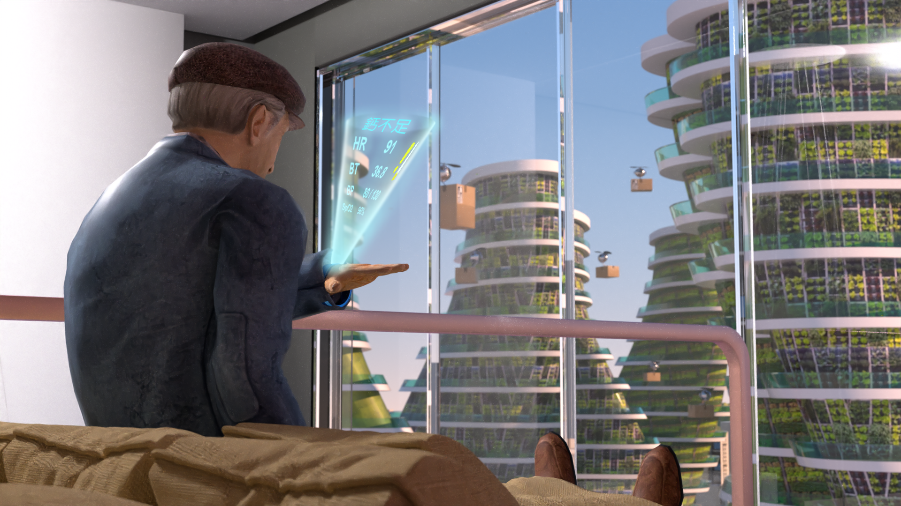

- About Me -
。自我介紹。
我的名字叫陳俊傑，出生於台北市，平常的休閒興趣是打羽球及攝影，專長是產品設計、3D建模以及UI、UX設計。我的個性是活潑外向，對於新奇的事物都很感興趣，也非常熱愛學習。
。工作經驗。
在大四的那年我選擇到了愛拍光電實習，在公司我是擔任研發部產品設計師的職位，在我任職的一年半內，我負責了醫療臉部掃描建模的產品設計，在這次專案中我將3D這方面的專長在產品領域發揮，也在工作過程中跟著軟體工程師學習到了一些軟體方面及3D掃描的技術(SFM)，後半年是光寶的互動式展架的研究及研發，畢業後則在原本的公司工作待到結束。
接著我是到了朋友成立的田茂智能互聯來做幫忙，在公司內擔任專案管理及3D建模設計師的職位，在工作的期間內，與成員們製作台中國家歌劇院互動式導覽設計，包含到歌劇院去拍攝取景、VR 360環景及3D場景的建置。雖然過程中學習到相當多的經驗，但公司未來的走向是想往行銷及弱電去做發展，在與老闆的討論過後，決定離開原本的職位，並且尋找合適的工作。
。工作經驗。
巨量移動科技股份有限公司
田茂智能
愛拍光電
作品集

nuPlant
面對超高齡化的2040社會，我們以 SDGs 其中兩大目標——健康生活福祉及永續城市發展，從自身的健康偵測與營養需求管理出發，鼓勵大眾在家中外牆與室內溫室種植具較高營養價值之蔬果及觀賞植物。運用更加精進之未來科技，如智慧偵測身體狀況後，根據 AI 提供之健康需求參考建議，無人機採收、快速運送新鮮蔬果，智慧家具及全息投影可即時根據需求調整。以智慧物聯網形成科技居家生活環境及蔬果互助社交圈，更同時綠化城市及美化生活環境，共同為維持環境永續盡一份心力。

2040 問題發掘與定義 Problem Discovery and Definition
高齡化｜老人健康照護｜高齡獨居問題｜環境綠化
你有想過2040年的社會是什麼樣子嗎？
2040年台灣已邁入超高齡社會，高齡人口佔比將高達30.6％，經衛福部統計高齡族群未來最擔心的問題為身體健康及照護問題，且國人平均壽命增加造成醫療負擔加重，如何「保持身體健康」是重大挑戰。扶養比上升也使「獨居長者增加」，未來誰能照顧我、如何維持生活重心和提升自我價值成為長者們擔心的問題，面對未來的高齡生活你準備好了嗎？SDGs 3及11以健康生活福祉及永續城市發展為目標，我們該如何透過不斷進步的科技以及對未來的想像，打造出適合高齡者生活的永續生態圈呢？

作品 2 - 詳細內容
這是作品2的詳細介紹內容。
作品 3 - 詳細內容
這是作品3的詳細介紹內容。
作品 4 - 詳細內容
這是作品4的詳細介紹內容。
作品 5 - 詳細內容
這是作品5的詳細介紹內容。
作品 6 - 詳細內容
這是作品6的詳細介紹內容。
聯絡資訊
Gmail : jeremy787230chen@gmail.com
Phone : 0910787230